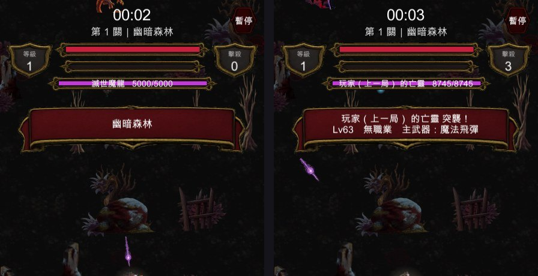

手搓廣告遊戲選集 · 吸血鬼復仇 · 亡靈 UI
量過了：位置、尺寸、顏色、文字格式逐項相同。倒是發現亡靈同時掛著真武器與魔王技能，傷害大約翻倍——已修。
亡靈從一開始就走 bossStates，所以 HUD 的 TryGetActiveBoss 早就把它當魔王在畫。
我沒有「做出」這個功能，是去量了一次確認它真的一致，並且加了驗證守住。

量的是實際渲染出來的 RectTransform 四角（換算回畫布單位），不是只判
「有沒有 SetActive(true)」——旗標對不代表畫面對：
魔王 顯示中 寬700×高60 中心x=540（畫布中線=540） 填充1.00 名稱「滅世魔龍 5000/5000」
亡靈 顯示中 寬700×高60 中心x=540（畫布中線=540） 填充1.00 名稱「玩家（上一局） 的亡靈 8745/8745」
逐項相同。亡靈甚至比魔王多一段出場橫幅（魔王沒有），會顯示它的等級、職業、主武器。
SpawnWraith 的註解寫著「只留 dash 當移動花招，其餘傷害全部由它自己的
VrWeapons 產生」，但程式碼還是照主武器掛上整組魔王能力
（ring 環爆／aimed 狙擊／summon 召喚）。
那是「不跑真武器」時代的折衷做法留下來的。兩者並存的結果是：
已改成只留 dash：它只是位移、不造成傷害，是純粹的移動花招，
不會跟武器的輸出重複。註解與實作終於對上。
這也解釋了上一輪那個數字：實測亡靈把玩家從 100 打到 0 只花了約 6 秒。 那裡面有一半是不該存在的魔王技能傷害。修完之後亡靈會明顯變弱一些， 這是正確的方向，但那個強度曲線（
1500 + 等級×115血、30 + 等級/2傷） 現在需要重新看一次——我還沒調，想先聽你的意見。
你寫的是「畫面中間要顯示血條」。現在魔王與亡靈的血條都是 水平置中、靠近畫面上方（在經驗條下面那一格）——那是這個遊戲既有的魔王血條位置。
如果你要的就是「跟魔王一樣」，那現在已經對了。 但如果你的意思是垂直方向也要在畫面正中央，那是另一回事：
所以我沒有自作主張去動它。要改的話跟我說一聲，我把它移下來， 但建議連帶考慮改成半透明或縮短。
新增 VR_ONLY=wbar：拍兩張同構圖的對照（真魔王一張、亡靈一張），
並量血條的實際位置與尺寸。之後這條路徑再壞掉會被抓到。